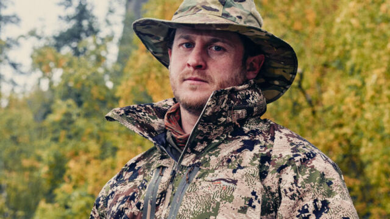
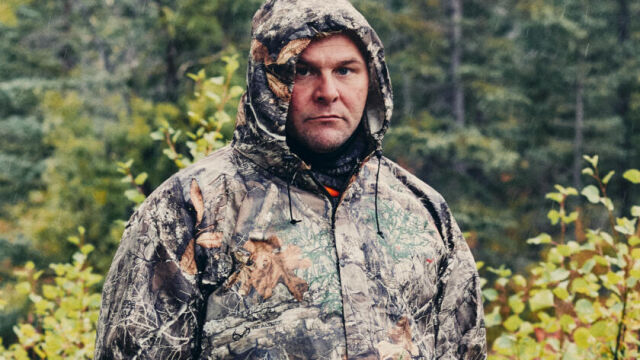
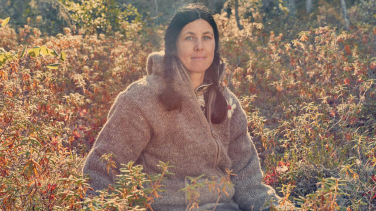
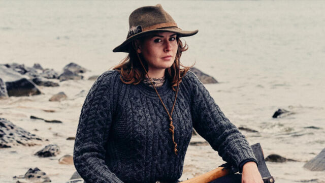
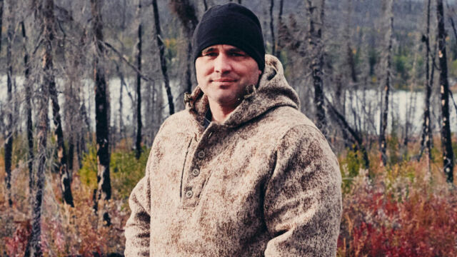
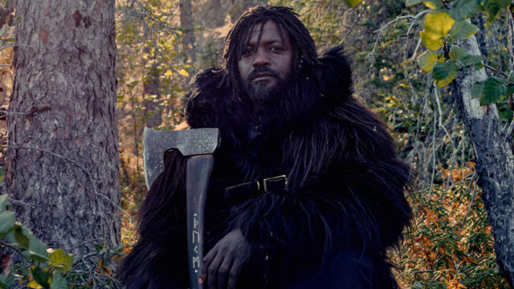
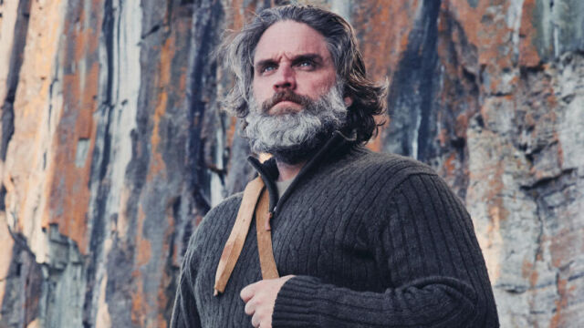
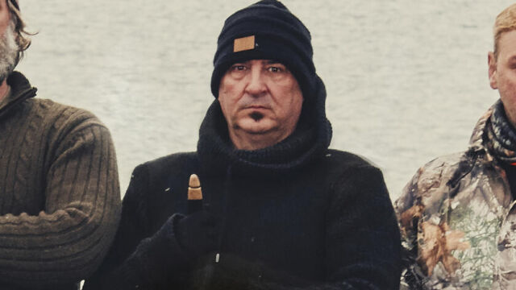

1stWinner
1stWinnerJordan Jonas
Construction
- Lasted
- 77 days
- Age
- 35
- From
- Lynchburg, Virginia
Loadout
- Paracord
- Saw
- Axe
- Sleeping bag
- Frying pan
- Ferro rod
- Fishing line and hooks
- Bow and arrows
- Trapping wire
- Multitool
Alone
The Arctic · Great Slave Lake, Northwest Territories, Canada · Premiered 6 Jun 2019
Days each survivalist lasted, in finishing order, and why they tapped out. Every season page uses the same 0–100 day scale so seasons can be compared at a glance.









Who they are, where they're from and the ten items they carried in.
1stWinnerConstruction
Loadout
2ndplaceAncestral Skills Teacher
Loadout
Disaster Preparedness Instructor
Loadout
Self Defense Instructor
Loadout
Wilderness Guide
Loadout
Homesteader
Loadout
Sere Specialist
Loadout
Search And Rescue K9 Handler
Loadout
Primitive Technology Instructor
Loadout
Hunting Guide
Loadout
How many survivalists chose each item (items grouped into simplified categories).
Air dates, survivalists remaining at the start of each episode, viewers and IMDb rating.
| Ep | Title & opening quote | Aired | Remaining | Viewers (M) | IMDb |
|---|---|---|---|---|---|
| 1 | Icebreaker“Our food lies ahead and death stalks us from behind.” — Ernest Shackleton | 6 Jun 2019 | — | 1.15 | |
| 2 | Tainted“Laws change; people die; the land remains.” — Abraham Lincoln | 13 Jun 2019 | — | 1.28 | |
| 3 | Up In Flames“This is no time for ease and comfort. It is the time to dare and endure.” — Winston Churchill | 20 Jun 2019 | — | 1.32 | |
| 4 | The Moose“A failure is not always a mistake... The real mistake is to stop trying.” — B.F. Skinner | 27 Jun 2019 | — | 1.44 | |
| 5 | The Kill“For suffering and enduring there is no remedy but striving and doing.” — Thomas Carlyle | 11 Jul 2019 | — | 1.17 | |
| 6 | Ablaze“The most difficult thing is the decision to act. The rest is merely tenacity.” — Amelia Earhart | 18 Jul 2019 | — | 1.17 | |
| 7 | Night Raider“Come what may, all bad fortune is to be conquered by endurance.” — Virgil | 25 Jul 2019 | — | 1.14 | |
| 8 | Out Cold“He who conquers others is strong. He who conquers himself is mighty.” — Lao Tzu | 1 Aug 2019 | — | 1.07 | |
| 9 | The Ice Cometh“Wisdom comes alone through suffering.” — Aeschylus | 8 Aug 2019 | — | 0.99 | |
| 10 | Thin Ice“Adapt or perish, now as ever, is nature's inexorable imperative.” — H.G. Wells | 15 Aug 2019 | — | 1.36 | |
| 11 | Fire and Ice“One day, in retrospect, the years of struggle will strike you as the most beautiful.” — Sigmund Freud | 22 Aug 2019 | — | 1.38 |